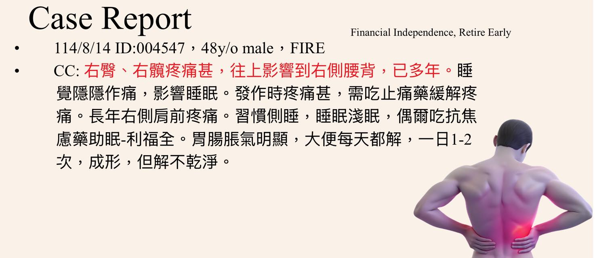
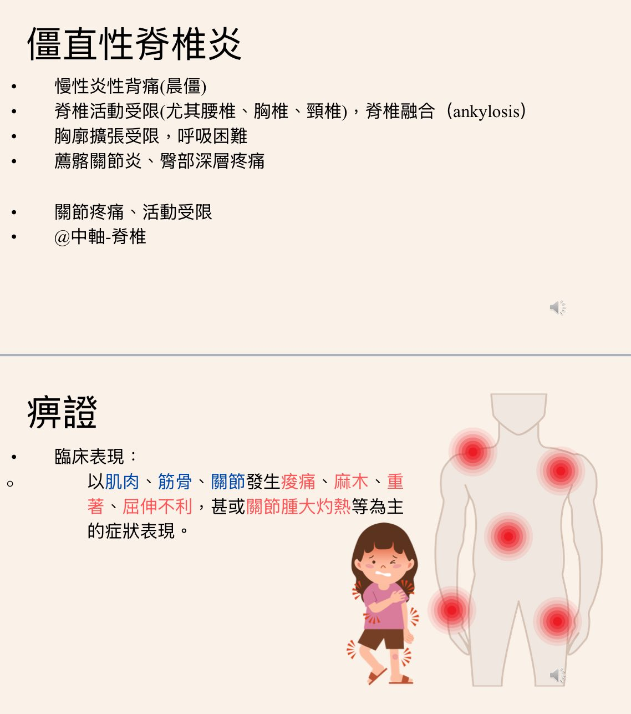

「每次上場都要全力以赴的準備」
「每次上場都要全力以赴的準備」
2025年肌筋膜脈學中醫應用舉辦第三屆肌筋膜讀書會，從過完年後的每個週日，一群人上線meeting，分章節輪流報告，各自提問相互討論。9月初完成了這為期8-9個月的讀書會。
也才休息兩個週日，緊接著9月底，又開始了「中西醫整合臨床討論會」，身為東門團隊的一員，很榮幸能擔任其中一次討論主題的報告醫師，主題「僵直性脊椎炎」，圍繞著這個主題，能一起與西醫免疫科高醫師、主持人東門中醫林以正院長進行討論，真的是讓我感到既興奮、又害怕！
興奮自己能在這主題坐上討論席，擔任中醫方的發話者，也擔心自己程度不足準備不夠，沒辦法真實反應、傳達出中醫臨床診間面對這類疾病患者的處置與思路。
準備的過程，真的是拼盡全力，能找的典籍條文、常用的方劑資料搜集好後，再分析整理，把最直接、不廢話不繞圈的重點，試著用短短的20分鐘呈現出來。
竭盡所能，拼盡全力的做準備，只為了在輪到我出場的時候，不要留下遺憾與懊悔。
畢竟這是一百多人的線上meeting，參與者來自四面八方，打破縣市區域的地理限制，只要上網進入會議室都能參與討論，上場機會只有一次，與其後續再做任何無謂的補償、補充，倒不如在事前備課做足準備，這週日真的是非常令人緊張又期待！
中西整合的疾病主題準備，真的不容易！好在身處於有AI的時代，Openevidence跟ChatGPT真的是大大縮短了我查找AS資料的時間，閱讀整理資料起來也很快就能抓到重點；至於中醫痹證的部分，就得土法煉鋼一條一條找、方劑一個一個拆，最後整合、再濃縮，希望週日能清楚表達我這次努力準備的成果！
老天爺也很幫忙，讀什麼來什麼病人，就這麼剛好來了一個符合這次我報告主題的患者，也經過同意後讓我拿出來在這個中西醫整合臨床討論會中做案例分享，期待這週日的夜晚能與各位參與的醫師一同激盪出漂亮的臨床視角！！
#中西醫整合臨床討論會
#僵直行脊椎炎 #痹證
中醫師 黃彥鈞

